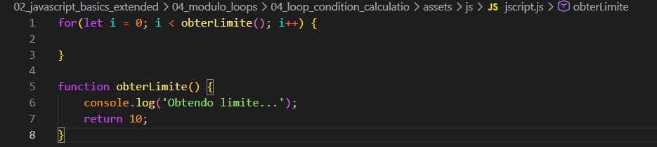
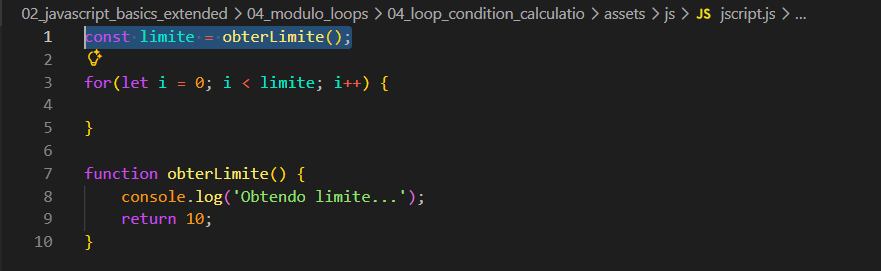
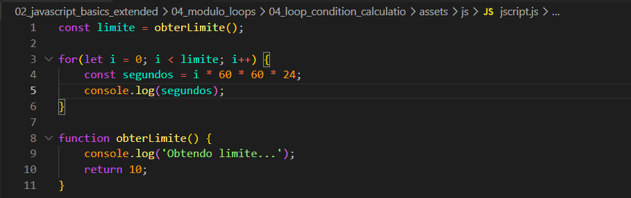
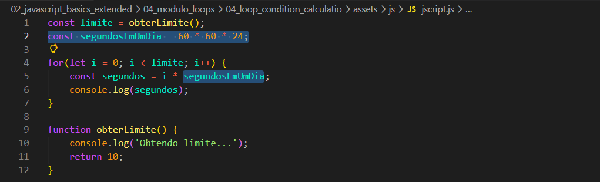

Loop Condition Calculation
Intro
Aqui iremos ver como podemos estar otimizando nosso for.
Aqui iremos ver como podemos estar otimizando nosso for.
Aqui declaramos um laco de repeticao for, declaramos uma variavel 'i = 0' e com isso iremos iterar sobre nossa variavel enquanto o 'i' < obterLimite() e incrementamos o valor de i em i++ (1 em cada iteracao). Depois de feito nosso for, faremos tambem nossa funcion obterLimite(). Ficando da seguinte forma:

Mesmo pedindo 10 e 10 o valor de obterLimite (nossa function), isso ocorre porque comecamos do i = 0 e do 0 ao 10 da 11.
Esse exemplo mostrado nao e algo bom de se fazer, pois ficara roubando performace de nossa aplicacao. Para melhorarmos nosso codigo, podemos chamar nossa funcao obterLimite() e atribuir seu valor a uma variavel e com isso dentro de nossa estrutura for chamamos essa variavel. Exemplo na pratica:

Agora iremos supor que dentro de nossa funcao obterLimite() ira nos retornar um numero de dias, e dentro de nosso laco de repeticao (for) queremos calcular os segundos desses dias que serao retornados por nosso obterLimite(). Para isso dentro de nosso for, podemos criar uma variavel segundos e esses segundos serao resultados de nosso i (indice)(numero de dias) * 60(numero de segundos que tem em 1 min) * 60(numero de minutos que temos em uma horas) * 24(numero de horas que temos em um dia). Ficando da seguinte forma:

Com isso podemos fazer da seguinte forma:
